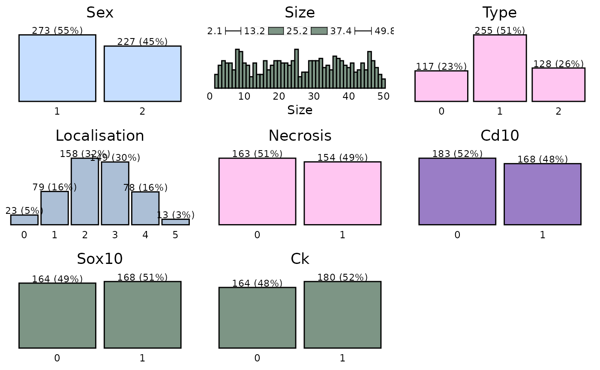
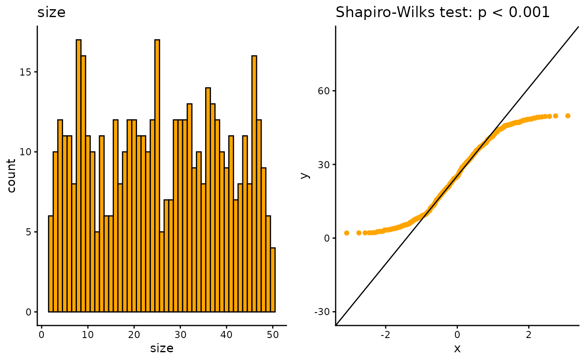

Data Management
data_management.RmdIntroduction
This article is a thorough guide to data management in our. It mainly uses the dplyr package with additional cancR functions. The article is structured as chapters, where each chapter describes a specific task and should work as a library.
Loading the cancR package
First we load the cancR package. The package automatically loads many packages useful for data management
Data
The cancR package comes with ready-to-use datasets. In this article we use the redcap_df dataset which imitates a dataset exported directly from redcap.
Combining functions with the piping operator
It is advised to combine the functions described in this article into
one code chunk that runs all functions at once. The functions are
combined with the symbol %>% called a pipe. The shortcut
for a pipe is ctrl+shift+m.
Piping starts by specifying the dataset of which the analyses should be performed. After this all subsequent functions are separated by a pipe. In the following example we start in the dataset “redcap_df”, where we subsequently select the variables id, sex and birth, add a new variable called “new_variable” and lastly filter so that we subset the dataset to rows where type = 1. All these functions are combined into a piping structure and assigned to a new object named “new_data”
Data inspection
Before starting on data management, it is important to get an overview of the dataset.
Inspect the dataset by either View(redcap_df) or the first six rows:
head(redcap_df)
#> id sex birth followup date_of_surgery size type localisation
#> 1 1 1 13-10-1966 02-03-2023 2002-07-07 24.10520 1 3
#> 2 2 1 31-10-1934 17-08-2023 1997-03-10 42.34623 1 4
#> 3 3 2 04-04-1942 24-01-2021 2000-01-29 40.90360 0 2
#> 4 4 1 27-10-1933 06-10-2022 1992-10-28 42.93259 2 4
#> 5 5 1 12-12-1927 31-03-2023 2001-03-31 18.67687 0 2
#> 6 6 2 14-11-1932 30-07-2025 2004-01-11 20.99129 2 2
#> necrosis cd10 sox10 ck death_date recurrence_date metastasis_date
#> 1 0 NA NA NA <NA> 2011-08-28 <NA>
#> 2 NA NA NA NA 2017-04-11 <NA> 2014-08-19
#> 3 NA NA 0 NA <NA> 2012-12-23 2014-09-15
#> 4 0 NA 0 1 <NA> <NA> 2012-12-25
#> 5 1 1 0 0 2018-09-24 2010-03-25 <NA>
#> 6 0 1 0 1 2019-04-02 2015-04-17 <NA>It is also important to assess the structure of the data to check for correct formatting. E.g. are date-variables coded as dates, continouous variables as numeric etc.
str(redcap_df)
#> 'data.frame': 500 obs. of 15 variables:
#> $ id : int 1 2 3 4 5 6 7 8 9 10 ...
#> $ sex : num 1 1 2 1 1 2 1 1 1 1 ...
#> $ birth : chr "13-10-1966" "31-10-1934" "04-04-1942" "27-10-1933" ...
#> $ followup : chr "02-03-2023" "17-08-2023" "24-01-2021" "06-10-2022" ...
#> $ date_of_surgery: chr "2002-07-07" "1997-03-10" "2000-01-29" "1992-10-28" ...
#> $ size : num 24.1 42.3 40.9 42.9 18.7 ...
#> $ type : int 1 1 0 2 0 2 2 2 1 2 ...
#> $ localisation : int 3 4 2 4 2 2 2 1 4 3 ...
#> $ necrosis : num 0 NA NA 0 1 0 0 NA NA NA ...
#> $ cd10 : num NA NA NA NA 1 1 1 1 1 1 ...
#> $ sox10 : num NA NA 0 0 0 0 0 NA 0 0 ...
#> $ ck : num NA NA NA 1 0 1 0 1 NA NA ...
#> $ death_date : chr NA "2017-04-11" NA NA ...
#> $ recurrence_date: chr "2011-08-28" NA "2012-12-23" NA ...
#> $ metastasis_date: chr NA "2014-08-19" "2014-09-15" "2012-12-25" ...Here we see that all date variables are coded as characters and not date. The conversion to date are described in the chapter: “Date formatting”
To get a graphical glimpse of the data we can use the summarisR() function:

And to exploit the number of missing values we use the missR() function
missR(redcap_df)
#> Nas detected in the following variables:
#>
#> variable NAs
#> 1 metastasis_date 335
#> 2 death_date 302
#> 3 recurrence_date 258
#> 4 necrosis 183
#> 5 sox10 168
#> 6 ck 156
#> 7 cd10 149We can also check if numerical variables are normally distributed with the distributR() function
distributR(redcap_df,
vars = size)
Data management
The next section goes through the most basic data management functions from the dplyr package.
Selection of variables
Variables/columns can be selected and removed with the select() function.
redcap_df %>%
select(id, sex, birth) %>%
head()
#> id sex birth
#> 1 1 1 13-10-1966
#> 2 2 1 31-10-1934
#> 3 3 2 04-04-1942
#> 4 4 1 27-10-1933
#> 5 5 1 12-12-1927
#> 6 6 2 14-11-1932Variables are removed with a minus sign.
redcap_df %>%
select(-id, -birth) %>%
head()
#> sex followup date_of_surgery size type localisation necrosis cd10 sox10
#> 1 1 02-03-2023 2002-07-07 24.10520 1 3 0 NA NA
#> 2 1 17-08-2023 1997-03-10 42.34623 1 4 NA NA NA
#> 3 2 24-01-2021 2000-01-29 40.90360 0 2 NA NA 0
#> 4 1 06-10-2022 1992-10-28 42.93259 2 4 0 NA 0
#> 5 1 31-03-2023 2001-03-31 18.67687 0 2 1 1 0
#> 6 2 30-07-2025 2004-01-11 20.99129 2 2 0 1 0
#> ck death_date recurrence_date metastasis_date
#> 1 NA <NA> 2011-08-28 <NA>
#> 2 NA 2017-04-11 <NA> 2014-08-19
#> 3 NA <NA> 2012-12-23 2014-09-15
#> 4 1 <NA> <NA> 2012-12-25
#> 5 0 2018-09-24 2010-03-25 <NA>
#> 6 1 2019-04-02 2015-04-17 <NA>It is also possible to choose variable based on text patterns, which is useful for variables with a common prefix/suffix such as _date
redcap_df %>%
select(contains("_date")) %>%
head()
#> death_date recurrence_date metastasis_date
#> 1 <NA> 2011-08-28 <NA>
#> 2 2017-04-11 <NA> 2014-08-19
#> 3 <NA> 2012-12-23 2014-09-15
#> 4 <NA> <NA> 2012-12-25
#> 5 2018-09-24 2010-03-25 <NA>
#> 6 2019-04-02 2015-04-17 <NA>The text pattern can also be starts_with, ends_with and matches for an exact match.
Renaming variables
Renaming of variable names can be done using rename(). The syntax is “new name” = “old name”
redcap_df %>%
rename(index = date_of_surgery,
cytokeratin = ck) %>%
head()
#> id sex birth followup index size type localisation necrosis
#> 1 1 1 13-10-1966 02-03-2023 2002-07-07 24.10520 1 3 0
#> 2 2 1 31-10-1934 17-08-2023 1997-03-10 42.34623 1 4 NA
#> 3 3 2 04-04-1942 24-01-2021 2000-01-29 40.90360 0 2 NA
#> 4 4 1 27-10-1933 06-10-2022 1992-10-28 42.93259 2 4 0
#> 5 5 1 12-12-1927 31-03-2023 2001-03-31 18.67687 0 2 1
#> 6 6 2 14-11-1932 30-07-2025 2004-01-11 20.99129 2 2 0
#> cd10 sox10 cytokeratin death_date recurrence_date metastasis_date
#> 1 NA NA NA <NA> 2011-08-28 <NA>
#> 2 NA NA NA 2017-04-11 <NA> 2014-08-19
#> 3 NA 0 NA <NA> 2012-12-23 2014-09-15
#> 4 NA 0 1 <NA> <NA> 2012-12-25
#> 5 1 0 0 2018-09-24 2010-03-25 <NA>
#> 6 1 0 1 2019-04-02 2015-04-17 <NA>